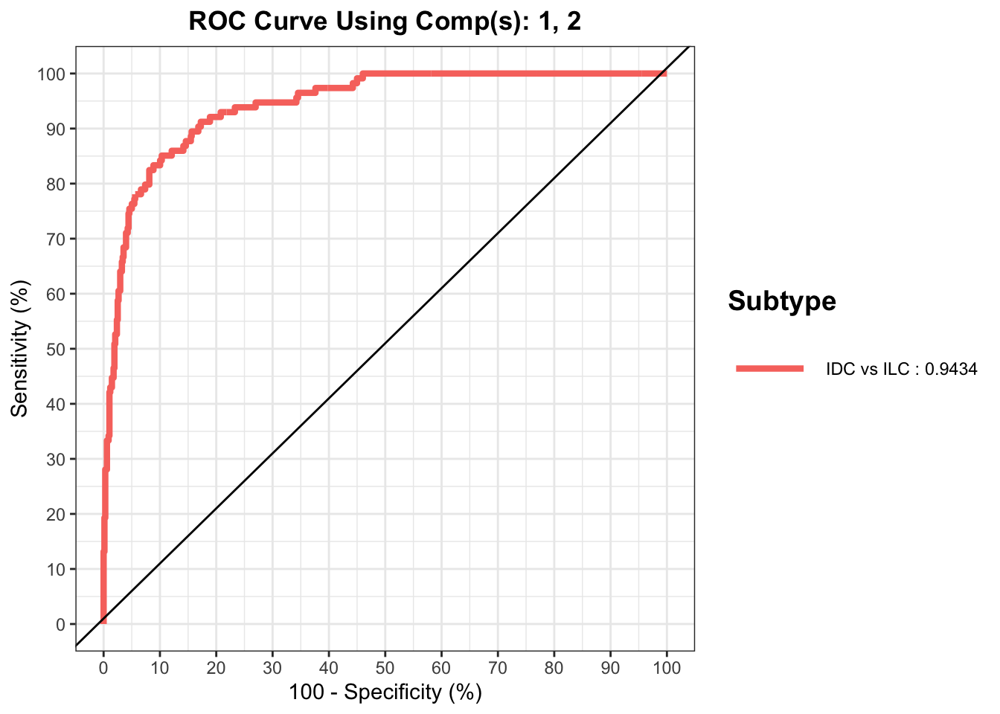

IDC_ILC
Wenjun Liu
Dame Roma Mitchell Cancer Research
Laboratories
Adelaide Medical School
University of Adelaide
19 September, 2023
Last updated: 2023-09-19
Checks: 6 1
Knit directory: WenjunLiu_Thesis_Chapter4/
This reproducible R Markdown analysis was created with workflowr (version 1.7.0). The Checks tab describes the reproducibility checks that were applied when the results were created. The Past versions tab lists the development history.
The R Markdown file has unstaged changes. To know which version of
the R Markdown file created these results, you’ll want to first commit
it to the Git repo. If you’re still working on the analysis, you can
ignore this warning. When you’re finished, you can run
wflow_publish to commit the R Markdown file and build the
HTML.
Great job! The global environment was empty. Objects defined in the global environment can affect the analysis in your R Markdown file in unknown ways. For reproduciblity it’s best to always run the code in an empty environment.
The command set.seed(20200930) was run prior to running
the code in the R Markdown file. Setting a seed ensures that any results
that rely on randomness, e.g. subsampling or permutations, are
reproducible.
Great job! Recording the operating system, R version, and package versions is critical for reproducibility.
Nice! There were no cached chunks for this analysis, so you can be confident that you successfully produced the results during this run.
Great job! Using relative paths to the files within your workflowr project makes it easier to run your code on other machines.
Great! You are using Git for version control. Tracking code development and connecting the code version to the results is critical for reproducibility.
The results in this page were generated with repository version 772af9f. See the Past versions tab to see a history of the changes made to the R Markdown and HTML files.
Note that you need to be careful to ensure that all relevant files for
the analysis have been committed to Git prior to generating the results
(you can use wflow_publish or
wflow_git_commit). workflowr only checks the R Markdown
file, but you know if there are other scripts or data files that it
depends on. Below is the status of the Git repository when the results
were generated:
Ignored files:
Ignored: .Rhistory
Ignored: .Rproj.user/
Ignored: data/.DS_Store
Ignored: data/aligned/
Ignored: data/knott_scRNA.rds
Ignored: data/knott_scRNA.rds.zip
Ignored: data/raw/
Ignored: data/scRNA_ref/
Ignored: data/trimmed/
Ignored: output/permutedscore_tumor.rds
Ignored: output/tcga_breast.rds
Untracked files:
Untracked: .DS_Store
Untracked: data/CellLine_sSNAPPY.rds
Untracked: data/EMT_marker.txt
Untracked: hsa04066.pathview.png
Unstaged changes:
Modified: analysis/DHT_signal.Rmd
Modified: analysis/IDC_ILC.Rmd
Modified: analysis/hsa04066.pathview.png
Note that any generated files, e.g. HTML, png, CSS, etc., are not included in this status report because it is ok for generated content to have uncommitted changes.
These are the previous versions of the repository in which changes were
made to the R Markdown (analysis/IDC_ILC.Rmd) and HTML
(docs/IDC_ILC.html) files. If you’ve configured a remote
Git repository (see ?wflow_git_remote), click on the
hyperlinks in the table below to view the files as they were in that
past version.
| File | Version | Author | Date | Message |
|---|---|---|---|---|
| Rmd | 772af9f | Wenjun-Liu | 2023-08-02 | fixed the x-axis order in HIF-DHT hp |
| Rmd | 29c6ff2 | Wenjun-Liu | 2023-08-02 | fixxed up AUROC plot |
| Rmd | 4b12097 | Wenjun-Liu | 2023-08-02 | tidy up all Rmd for thesis |
| html | 4b12097 | Wenjun-Liu | 2023-08-02 | tidy up all Rmd for thesis |
library(tidyverse)
library(yaml)
library(scales)
library(pander)
library(AnnotationHub)
library(ggraph)
library(igraph)
library(ensembldb)
library(cowplot)
library(magrittr)
library(sSNAPPY)
library(cqn)
library(DT)
library(multcomp)
library(rvest)
library(ggfortify)
library(xml2)
library(org.Hs.eg.db)
library(lme4)
library(colorspace)
library(lmerTest)
library(reactable)
library(corrplot)
library(scatterpie)
library(htmltools)
library(RColorBrewer)
library(msigdbr)
library(UpSetR)
library(glue)
library(ggfortify)
library(pheatmap)
library(parallel)
library(ggplotify)
library(edgeR)
library(plotly)
library(ggforce)
library(ggnewscale)
library(concaveman)
library(WGCNA)
library(ggforce)
library(ggrepel)
# library(ISOpureR)
library(mixOmics)
library(ExperimentHub)
library(singscore)
library(grid)
library(goseq)
source(here::here("analysis/smallFunctions/make_gsNetwork.R"))panderOptions("table.split.table", Inf)
panderOptions("big.mark", ",")
theme_set(theme_bw())config <- here::here("config/config.yml") %>%
read_yaml()
suffix <- paste0(config$tag)
sp <- config$ref$species %>%
str_replace("(^[a-z])[a-z]*_([a-z]+)", "\\1\\2") %>%
str_to_title()Setup
Gene Annotations
ah <- AnnotationHub() %>%
subset(rdataclass == "EnsDb") %>%
subset(str_detect(description, as.character(config$ref$release))) %>%
subset(genome == config$ref$build)
stopifnot(length(ah) == 1)ensDb <- ah[[1]]
genesGR <- genes(ensDb)
transGR <- transcripts(ensDb)mcols(transGR) <- mcols(transGR) %>%
cbind(
transcriptLengths(ensDb)[rownames(.), c("nexon", "tx_len")]
)mcols(genesGR) <- mcols(genesGR) %>%
as.data.frame() %>%
dplyr::select(
gene_id, gene_name, gene_biotype, entrezid
) %>%
left_join(
mcols(transGR) %>%
as.data.frame() %>%
mutate(
tx_support_level = case_when(
is.na(tx_support_level) ~ 1L,
TRUE ~ tx_support_level
)
) %>%
group_by(gene_id) %>%
summarise(
n_tx = n(),
longest_tx = max(tx_len),
ave_tx_len = mean(tx_len),
gc_content = sum(tx_len*gc_content) / sum(tx_len)
) %>%
mutate(
bin_length = cut(
x = ave_tx_len,
labels = seq_len(10),
breaks = quantile(ave_tx_len, probs = seq(0, 1, length.out = 11)),
include.lowest = TRUE
),
bin_gc = cut(
x = gc_content,
labels = seq_len(10),
breaks = quantile(gc_content, probs = seq(0, 1, length.out = 11)),
include.lowest = TRUE
),
bin = paste(bin_gc, bin_length, sep = "_")
),
by = "gene_id"
) %>%
set_rownames(.$gene_id) %>%
as("DataFrame")Sample metadata and merged counts
Sample metadata and merged counts for tumour samples were read in and
filtered as in the dge analysis. A
DGElist was formed and cqn was applied for
biases introduced by systematic artefacts.
init_cellType <- read_delim(here::here("config/sample_meta.txt"), delim = "\t")
init_cellType <- init_cellType %>%
mutate(Stroma = ifelse(str_detect(Dominant_cell_type, regex("Stroma", ignore_case = T)), TRUE, FALSE),
Epithelial = ifelse(str_detect(Dominant_cell_type, regex("Epithelial", ignore_case = T)), TRUE, FALSE),
Ducts = ifelse(str_detect(Dominant_cell_type, regex("ducts", ignore_case = T)), TRUE, FALSE),
Fat = ifelse(str_detect(Dominant_cell_type, regex("fat", ignore_case = T)), TRUE, FALSE),
patient = str_replace(patient, "TH", "TH-")) %>%
pivot_longer(c("Stroma", "Epithelial", "Ducts", "Fat"),
names_to = "cell_type",
values_to = "TF") %>%
mutate(cell_type = ifelse(TF, cell_type, NA)) %>%
dplyr::select(-c("TF", "Dominant_cell_type")) %>%
.[!is.na(.$cell_type),] %>%
chop("cell_type") %>%
mutate(cell_type = vapply(.$cell_type, function(x){
paste(x,collapse = ";")
}, character(1)))samples <- config$samples %>%
here::here() %>%
read_tsv() %>%
left_join(init_cellType) %>%
mutate(
Filename = paste0(sample, ".r_1"),
condition = ifelse(Tumor,
paste("Tumor", treat, sep = "_"),
paste("Normal", treat, sep = "_")),
patient = vapply(.$patient, function(x){str_split(x, "-")[[1]][2]}, character(1)),
patient = ifelse(Tumor,
paste("Tumor", patient, sep = "-"),
paste("Normal",patient, sep = "-")),
desc = paste(patient, treat, sep = " ")
) %>%
dplyr::select(-c("name", "sample")) %>%
dplyr::rename(name = desc) %>%
mutate_if(
function(x){length(unique(x)) < length(x)},
as.factor
) %>%
mutate(
treat = relevel(treat, ref = "Veh")
)mergedSamples <- samples %>%
group_by(name, patient, treat, Tumor, cell_type, Tissue_type, Age, Diagnosis) %>%
tally()
tumor_sample <- mergedSamples %>%
dplyr::filter(Tumor == TRUE) %>%
droplevels()
diag_cols <- readRDS("~/GSE800098/output/diag_cols.rds")treat_cols <- c(
Veh = rgb(0.7, 0.7, 0.7),
DHT = rgb(0.8, 0.2, 0.2),
E2 = rgb(0.2, 0.2, 0.8),
`E2+DHT` = rgb(1, 0.4, 1)
)
tumor_cols <- hcl.colors(
n = length(unique(samples$Tumor)),
palette = "Zissou 1"
) %>%
setNames(unique(samples$Tumor))
patient_cols <- hcl.colors(
n = length(levels(tumor_sample$patient)),
palette = "Spectral"
) %>%
setNames(levels(tumor_sample$patient))treat_shapes <- c(
Veh = 1,
DHT = 19,
E2 = 15,
`E2+DHT` = 17
)# counts <- here::here("data/aligned/counts/counts.out.gz") %>%
# gzfile() %>%
# read_tsv(comment = "#") %>%
# dplyr::select(Geneid, ends_with("bam")) %>%
# rename_at(vars(ends_with("bam")), dirname) %>%
# rename_all(basename) %>%
# column_to_rownames("Geneid")# mergedCounts <- counts %>%
# rownames_to_column("gene_id") %>%
# pivot_longer(
# cols = -gene_id,
# names_to = "Filename",
# values_to = "counts"
# ) %>%
# left_join(samples, by = "Filename") %>%
# group_by(
# gene_id, name, patient, treat, Tumor) %>%
# summarise(counts = sum(counts), .groups = "drop") %>%
# pivot_wider(
# id_cols = gene_id,
# values_from = counts,
# names_from = name
# ) %>%
# column_to_rownames("gene_id")
# saveRDS(mergedCounts, here::here("data/mergedCounts.rds"))
mergedCounts <- readRDS(here::here("data/mergedCounts.rds"))rm(samples)
gc() used (Mb) gc trigger (Mb) limit (Mb) max used (Mb)
Ncells 12022827 642.1 18782531 1003.1 NA 18782531 1003.1
Vcells 31693152 241.8 54016728 412.2 204800 53994622 412.0minCPM <- 1.5
minSamples_tumor <- 8
genes2Keep_tumor <- mergedCounts[,colnames(mergedCounts) %in% tumor_sample$name] %>%
edgeR::cpm() %>%
is_greater_than(minCPM) %>%
rowSums() %>%
is_weakly_greater_than(minSamples_tumor)dge_tumor <- readRDS(here::here("output/dge_tumor.rds"))cqNorma_tumor <- with(
dge_tumor,
cqn(
counts= counts,
x = genes$gc_content,
lengths = genes$ave_tx_len
)
)
dge_tumor$offset <- cqNorma_tumor$glm.offset
logCPM_tumor <- cqNorma_tumor$y + cqNorma_tumor$offsetpcaPost_tumor <- logCPM_tumor %>%
t() %>%
prcomp() tpm_func <- function(counts,len) {
x <- counts/len
return(t(t(x)*1e6/colSums(x)))
}
GeneLength <- genesGR %>%
as_tibble() %>%
dplyr::select(gene_name, ave_tx_len)
tumor_count <- mergedCounts[,colnames(mergedCounts) %in% tumor_sample$name]
tumor_count <-tumor_count %>%
rownames_to_column("gene_id") %>%
left_join(
genesGR %>%
as.data.frame() %>%
dplyr::select(gene_id, gene_name)
) %>%
.[!duplicated(.$gene_name),] %>%
dplyr::select(-gene_id)
rownames(tumor_count) <- tumor_count$gene_name
tumor_count <- tumor_count %>%
dplyr::select(-gene_name)new_diag_col <- qualitative_hcl(2, palette = "Dark 3") %>%
set_names(c("IDC-like", "ILC-like"))
# tumor_sample <- tumor_sample %>%
# mutate(
# Diagnosis = ifelse(
# str_detect(Diagnosis, "invasive"), "ILC-like", "IDC-like"
# )
# )Exppression of ILC marker genes
By correlating the first three PCA components of all samples with corresponding clinical information, a strong confounding effect of pathological diagnosis was revealed. In the clinical records of tumours used in this study, tumours were either designated invasive carcinoma of no special type or infiltrating carcinoma of no special type, which pathologically is considered to be the same entity. An independent pathological analysis of hematoxylin and eosin (H&E) staining sections of representative uncultured tumour fragments confirmed they were ductal carcinomas with no distinguishing features, ruling out the possibility that some were lobular carcinomas which had been misclassified as ductal carcinomas. However, the different labels indicated that subtle phenotypic distinctions between the two groups of tumours were observed by the pathologist, and it is known that clinically tumours of no special type often have mixed ductal and lobular features.
So we examined the expression of a few genes that are known to be distinct between IDC and ILC tumours.
geneOfInterest <- dge_tumor$genes %>%
dplyr::filter(gene_name %in% c("CDH1", "FOXA1", "PTEN")) %>%
pull(gene_id)The ILC hallmarks that were identified in The Cancer Genome Atlas (TCGA) breast tumour RNA-seq dataset (lack of E-cadherin CDH1, loss of PTEN and elevated FOXA1 expression) were also observed in our cohort of primary tumours that were labelled to be invasive carcinoma of no special type. Therefore, we hypothesized that transcriptionally, the group of samples labelled as invasive carcinoma of no special type by the pathologist may be more “lobular-like” and the other group is more “ductal-like”, whilst still being with the larger category of ductal carcinomas.
logCPM_tumor %>%
.[rownames(.) %in% geneOfInterest, ] %>%
# .[, str_detect(colnames(.), "Tumor-2", TRUE)] %>%
as.data.frame() %>%
rownames_to_column("gene_id") %>%
pivot_longer(
cols = -"gene_id",
names_to = "name",
values_to = "logCPM"
) %>%
left_join(tumor_sample) %>%
left_join(dge_tumor$genes) %>%
ggplot(
aes(Diagnosis, logCPM, color = Diagnosis)
) +
geom_boxplot() +
# ggpubr::stat_compare_means(method = "t.test",
# paired = FALSE,
# label.x = 1.5,
# label.y = 8.5,
# size = 4,
# aes(label = paste0("p-value = ", ..p.format..))
# ) +
geom_point() +
scale_color_manual(
values = set_names(new_diag_col,
c("infiltrating carcinoma of no special type",
"invasive carcinoma of no special type"))) +
scale_x_discrete(labels = function(x) str_wrap(x, width = 20)) +
geom_label_repel(
aes(label = name),
data = . %>%
dplyr::filter(patient == "Tumor-2",
gene_name == "CDH1"),
size = 3) +
facet_wrap(~gene_name)Expressions of ILC marker genes in tumours that were labelled differently by the pathologist.
| Version | Author | Date |
|---|---|---|
| 4b12097 | Wenjun-Liu | 2023-08-02 |
TCGA data
In an attempt to further explore whether the two groups of PDE tumours can be distinguished by relative levels of ductal versus lobular features, a sparse partial least squares – discriminant analysis (sPLS-DA) classifier was trained and tested using mixOmics., using TCGA female primary breast tumour cohorts.
Breast tumors TCGA data was retrieved from GEO
GSE62944 using ExperimentalHub()
eh = ExperimentHub()
query(eh , "GSE62944")ExperimentHub with 3 records
# snapshotDate(): 2023-04-24
# $dataprovider: GEO
# $species: Homo sapiens
# $rdataclass: SummarizedExperiment, ExpressionSet
# additional mcols(): taxonomyid, genome, description,
# coordinate_1_based, maintainer, rdatadateadded, preparerclass, tags,
# rdatapath, sourceurl, sourcetype
# retrieve records with, e.g., 'object[["EH1"]]'
title
EH1 | RNA-Sequencing and clinical data for 7706 tumor samples from The...
EH1043 | RNA-Sequencing and clinical data for 9246 tumor samples from The...
EH1044 | RNA-Sequencing and clinical data for 741 normal samples from The...tcga_data <- eh[["EH1"]]
breast_data <- tcga_data[, which(phenoData(tcga_data)$CancerType=="BRCA")]
breast_data <- breast_data[, which(phenoData(breast_data)$gender =="FEMALE")]
breast_data <- breast_data[, which(phenoData(breast_data)$histological_type %in% c("Infiltrating Ductal Carcinoma", "Infiltrating Lobular Carcinoma"))]PCA
proteinGene <- genesGR %>%
as.data.frame() %>%
# group_by(gene_name) %>%
# filter(n() == 1) %>%
# ungroup() %>%
dplyr::filter(gene_biotype == "protein_coding") %>%
pull(gene_name)
breast_data <- breast_data[ which(featureNames(breast_data)%in% proteinGene),]PCA was firstly performed on all primary tumor tissues derived from female donors that were either IDC or ILC. To reduce running time, only the top 5k genes with the highest average counts were included.
top5000_bothGroup <- exprs(breast_data) %>%
rowMeans() %>%
sort(decreasing = TRUE) %>%
.[1:5000] %>%
names()
bothGroup_pca <- breast_data[ which(featureNames(breast_data )%in% top5000_bothGroup),] %>%
exprs() %>%
t() %>%
prcomp()
phenoData(breast_data)$histological_type <- ifelse(
str_detect(phenoData(breast_data)$histological_type, "Ductal"),
"IDC", "ILC"
)bothGroup_import <- percent(summary(bothGroup_pca)$importance["Proportion of Variance", ], 0.1) %>%
paste(names(.), ., sep = ": ")
p1 <- bothGroup_pca$x[, 1:5] %>%
as.data.frame() %>%
rownames_to_column("sample") %>%
mutate(
Diagnosis = phenoData(breast_data)$histological_type) %>%
ggplot(
aes(PC1, PC2, color =Diagnosis)
) +
geom_point() +
labs(
x = bothGroup_import[1],
y = bothGroup_import[2]
) +
scale_color_manual(values = diag_cols)
p2 <-bothGroup_pca$x[, 1:5] %>%
as.data.frame() %>%
rownames_to_column("sample") %>%
mutate(
Diagnosis = phenoData(breast_data)$histological_type) %>%
ggplot(
aes(PC3, PC4, color =Diagnosis)
) +
geom_point() +
labs(
x = bothGroup_import[3],
y = bothGroup_import[4]
) +
scale_color_manual(values = diag_cols)
plot_grid(
plot_grid(
p1 + theme(legend.position = "none"),
p2 + theme(legend.position = "none"),
nrow = 1),
get_legend(p1),
nrow = 1,
rel_widths = c(7.5,1))PCA plots of all IDC and ILC samples. No clear separation between the two groups could be observed.
| Version | Author | Date |
|---|---|---|
| 4b12097 | Wenjun-Liu | 2023-08-02 |
IDC <- breast_data[ which(featureNames(breast_data) %in% rownames(tumor_count)), which(phenoData(breast_data)$histological_type == "IDC")]
ILC <- breast_data[ which(featureNames(breast_data) %in% rownames(tumor_count)), which(phenoData(breast_data)$histological_type == "ILC")]There were 728 IDC and 164 ILC samples in the dataset.50 IDCs and 50 ILCs were randomly sampled to form the training dataset while the remaining data formed the test dataset.
set.seed(123)
IDC_train_sample <- sample(phenoData(IDC)$bcr_patient_barcode, 50)
IDC_train <- IDC[, which(phenoData(IDC)$bcr_patient_barcode %in% IDC_train_sample)]
IDC_test <- IDC[, which(!phenoData(IDC)$bcr_patient_barcode %in% IDC_train_sample)]
ILC_train_sample <- sample(phenoData(ILC)$bcr_patient_barcode, 50)
ILC_train <- ILC[, which(phenoData(ILC)$bcr_patient_barcode %in% ILC_train_sample)]
ILC_test <- ILC[, which(!phenoData(ILC)$bcr_patient_barcode %in% ILC_train_sample)]sPLS-DA
Normalise to z-score
To make sure the expression data is comparable across different studies, they will all be converted to logCPM first before converting to z-scores.
combined_train <- cbind(exprs(IDC_train), exprs(ILC_train)[match(rownames(exprs(ILC_train)), rownames(exprs(IDC_train))), ]) %>%
.[!duplicated(rownames(.)), ] %>%
edgeR::cpm(log = TRUE)combined_train_mean <- apply(combined_train, 1, mean)
combined_train_sd <- apply(combined_train, 1, sd)
combined_train <- sapply(rownames(combined_train), function(x){
(combined_train[x,] - combined_train_mean[x])/combined_train_sd[x]
})To start analysis, a basic MINT PLS-DA model was formed, in which all features were used to construct an arbitrarily chosen number of components.
train_type <- rep(c("IDC", "ILC"), times = c(ncol(exprs(IDC_train)), ncol(exprs(ILC_train))))
# train_study <- rep(c("tcga", "gse80098"), times = c((ncol(exprs(IDC_train)) + ncol(exprs(ILC_train)))))
basic.plsda.model <- splsda(
X = combined_train,
Y = train_type,
ncomp = 10)The number of components was set to 10 for the initial inspection. There is a large degree of overlap between ILC & IDC on the first two components.
plotIndiv(basic.plsda.model, comp = c(1,2), ellipse = TRUE, ind.names = FALSE)
| Version | Author | Date |
|---|---|---|
| 4b12097 | Wenjun-Liu | 2023-08-02 |
and the 3rd and 4th components.
plotIndiv(basic.plsda.model, comp = c(3,4), ellipse = TRUE, ind.names = FALSE)
| Version | Author | Date |
|---|---|---|
| 4b12097 | Wenjun-Liu | 2023-08-02 |
Tune parameter
perf() function was used to choose the optimal number of
components.
# set.seed(30)
# Perf.plsda <- perf(basic.plsda.model, validation = "Mfold", folds = 3,
# progressBar = FALSE, nrepeat = 50, cpus = 8)
# saveRDS(Perf.plsda, here::here("output/Perf_plsda.rds"))
Perf.plsda <- readRDS(here::here("output/Perf_plsda.rds"))
matplot(Perf.plsda$error.rate$BER, type = 'l', lty = 1,
col = color.mixo(1:3),
main = 'Balanced Error rate')
legend('topright',
c('max.dist', 'centroids.dist', 'mahalanobis.dist'),
lty = 1,
col = color.mixo(5:7))
| Version | Author | Date |
|---|---|---|
| 4b12097 | Wenjun-Liu | 2023-08-02 |
Based on the graph above, 4 components gives the lowest balanced error rate.
tune.splsda() function was then used to tune the number
of features for each component. The ncomp parameter was set
to 6 because there can be disagreement between the optimal number of
components chosen by the two functions.
# set.seed(30)
# tune.splsda.srbct <- tune.splsda(
# X = combined_train,
# Y = train_type,
# ncomp = 6,
# validation = 'Mfold',
# folds = 3, dist = 'max.dist', progressBar = FALSE,
# measure = "BER", test.keepX = c(5:20,
# seq(20, 300, 5)
# ),
# nrepeat = 50,
# )
# saveRDS(tune.splsda.srbct, here::here("output/tune_splsda_srbct.rds"))
tune.splsda.srbct <- readRDS(here::here("output/tune_splsda_srbct.rds")) ncomp <- tune.splsda.srbct$choice.ncomp$ncomp # optimal number of components based on t-tests on the error rate
select.keepX <- tune.splsda.srbct$choice.keepX[1:2] The optimal number of components decided by this method was 2, and the numbers of features were 19, 247.
The final model was plotted and there is now a better separation between the two groups on 1st component, but there is still a certain degree of overlap.
splsda.final <- splsda(
X = combined_train,
Y = train_type,
ncomp = ncomp,
keepX = select.keepX
)
plotIndiv(splsda.final, ind.names = FALSE, legend=TRUE,
ellipse = TRUE, title="SPLS-DA, Final result",
comp = c(1, 2))
| Version | Author | Date |
|---|---|---|
| 4b12097 | Wenjun-Liu | 2023-08-02 |
The decision boundaries decided by this final model were visualised. New data will be projected on this prediction background.
background <- background.predict(splsda.final, comp.predicted=2,
dist = "max.dist")
plotIndiv(splsda.final, comp = 1:2, group = train_type,
ind.names = FALSE, title = "Maximum distance",
legend = TRUE, background = background)
| Version | Author | Date |
|---|---|---|
| 4b12097 | Wenjun-Liu | 2023-08-02 |
Comp1 features
Features selected for the 1st component were:
plotLoadings(splsda.final, contrib = 'max', method = 'mean', comp = 1,
legend.color = diag_cols[c("IDC", "ILC")])
| Version | Author | Date |
|---|---|---|
| 4b12097 | Wenjun-Liu | 2023-08-02 |
comp1_gene <- splsda.final$loadings$X %>%
as.data.frame() %>%
rownames_to_column("gene_name") %>%
dplyr::filter(comp1 != 0) %>%
pull(gene_name)
combined_train_df <- t(combined_train) %>%
as.data.frame() %>%
rownames_to_column("gene_name") %>%
pivot_longer(
cols = -"gene_name",
names_to = "sample",
values_to = "normalised expression") %>%
left_join(
data.frame(
type = train_type,
sample = rownames(combined_train))
)IDC_highGene <- combined_train_df %>%
dplyr ::filter(gene_name %in% comp1_gene) %>%
split(f = .$gene_name) %>%
lapply(group_by, type) %>%
lapply(summarize, median = median(`normalised expression`)) %>%
sapply(function(x){x[1,2] > x[2,2]}) %>%
enframe(
name = "gene_name",
value = "high_in_IDC"
) %>%
mutate(
color = ifelse(high_in_IDC, "firebrick", "midnightblue")
)Comp2 features
comp2_gene <- splsda.final$loadings$X %>%
as.data.frame() %>%
rownames_to_column("gene_name") %>%
dplyr::filter(comp2 != 0) %>%
pull(gene_name)
IDC_highGene_comp2 <- combined_train_df %>%
dplyr ::filter(gene_name %in% comp2_gene) %>%
split(f = .$gene_name) %>%
lapply(group_by, type) %>%
lapply(summarize, median = median(`normalised expression`)) %>%
sapply(function(x){x[1,2] > x[2,2]}) %>%
enframe(
name = "gene_name",
value = "high_in_IDC"
) %>%
mutate(
color = ifelse(high_in_IDC, "firebrick", "midnightblue")
)A total of 247 component 2 features were selected by the classifier.
TF features selected
A vector of all known transciption factors was created by summarizing 6 TFT datasets: TRED, ITFP, ENCODE, Neph2012, TRRUST and Marbach2016.
# tftargets package summarizes 6 TFT datasets
# library(RCurl)
# download.file(
# url = "https://raw.githubusercontent.com/slowkow/tftargets/master/data/tftargets.rda",
# destfile = here::here("data/tftargets.rda"),
# method = "curl"
# )
TFT_ls <- admisc::listRDA(here::here("data/tftargets.rda"))
all_TF <- lapply(TFT_ls, names) %>%
Reduce(union, .) %>%
unique()IDC_highGene_comp2_tf <- IDC_highGene_comp2 %>%
mutate(
TF = ifelse(gene_name %in% all_TF, TRUE, FALSE)
) %>%
dplyr::filter(TF)50 of the component 2 features were transcription factors:
IDC_highGene_comp2_tf %>%
mutate(
`Group with Higher Expression` = ifelse(
high_in_IDC, "IDC", "ILC"
)
) %>%
dplyr::select(
Gene = gene_name,
`Group with Higher Expression`
) %>%
mutate_all(as.factor) %>%
datatable(
filter = "top"
)They are potentially implicated in mediating the transcriptional difference between the two tumour groups.
Test model
The fitted model was used to predict the diagnostic type of test data, which contained 17293 and 17293 samples.
combined_test <- cbind(exprs(IDC_test), exprs(ILC_test)[match(rownames(exprs(ILC_test)), rownames(exprs(IDC_test))), ]) %>%
.[!duplicated(rownames(.)), ] %>%
edgeR::cpm(log = TRUE)
combined_test_mean <- apply(combined_test, 1, mean)
combined_test_sd <- apply(combined_test, 1, sd)
combined_test <- sapply(rownames(combined_test), function(x){
(combined_test[x,] - combined_test_mean[x])/combined_test_sd[x]
}) Condfusion matrix with the predicted labels and the true lables were:
test_type <- rep(c("IDC", "ILC"), times = c(ncol(exprs(IDC_test)), ncol(exprs(ILC_test))))
splsda.test <- predict(splsda.final,
combined_test,
dist = "all")The ROC curve of the testing was:
auroc(splsda.final, newdata = combined_test, outcome.test = test_type, roc.comp = 2, print = FALSE,
legend.title = "Subtype")
| Version | Author | Date |
|---|---|---|
| 4b12097 | Wenjun-Liu | 2023-08-02 |
Prediction
The trained and tested model was used to predict the subtype of all the vehicle PDEs.
cpm_tumor <- tumor_count %>%
edgeR::cpm(log = TRUE) %>%
.[, str_detect(colnames(.), "Veh")] %>%
.[match(colnames(splsda.final$X), rownames(.)),]
cpm_tumor_mean <- apply(cpm_tumor, 1, mean)
cpm_tumor_sd <- apply(cpm_tumor, 1, sd)
cpm_tumor <- sapply(rownames(cpm_tumor), function(x){
(cpm_tumor[x,] - cpm_tumor_mean[x])/cpm_tumor_sd[x]
}) The prediction results were:
splsda.final <- splsda(
X = combined_train,
Y = train_type,
ncomp = ncomp,
keepX = c(19, 311)
)
splsda.pred <- predict(splsda.final,
cpm_tumor ,
dist = "centroids.dist")
splsda.pred$class$centroids.dist %>%
as.data.frame() %>%
rownames_to_column("name") %>%
left_join(dge_tumor$samples) %>%
mutate(
Diagnosis = ifelse(
str_detect(Diagnosis, "invasive"), "ILC-like", "IDC-like"
)
) %>%
dplyr::select(patient, "comp2",
Diagnosis,
# Total_Epithelial
) %>%
unique() %>%
mutate(Alignment = ifelse(
(str_detect(Diagnosis, "ILC") & comp2 == "ILC" |
str_detect(Diagnosis, "IDC") & comp2 == "IDC"),
"\u2714 Yes", "\u2716 No"
)) %>%
dplyr::rename(
Patient = patient,
`Manual Prediction` = Diagnosis,
`sPLS-DA Prediction` = comp2
) %>%
mutate_all(as.factor) %>%
datatable(
filter = "top",
height = 700,
) %>%
formatStyle(
c( "sPLS-DA Prediction"),
color = styleEqual(c("ILC", "IDC"), c("#00AD9A", "#E16A86"))
) %>%
formatStyle(
"Manual Prediction",
color = styleEqual(c("ILC-like", "IDC-like"), c("#00AD9A", "#E16A86"))
) %>%
formatStyle(
'Alignment',
color = styleEqual(c( "\u2714 Yes", "\u2716 No"), c("#008000", "#e00000"))
)The classifier’s prediction results and the prediction based on the pathologist’s label and marker gene expressions aligned for all but one sample Tumor-8.
pred_result <- splsda.pred$class$centroids.dist %>%
as.data.frame() %>%
rownames_to_column("name") %>%
left_join(dge_tumor$samples) %>%
mutate(Diagnosis = ifelse(
str_detect(Diagnosis, "invasive"), "ILC", "IDC"
)) %>%
dplyr::select(
patient,
`sPLS-DA prediction` = "comp2",
`Prediction by\nmarker genes` = Diagnosis) %>%
unique() %>%
mutate(align = ifelse(
`sPLS-DA prediction` == `Prediction by\nmarker genes`,
TRUE, FALSE
)) %>%
pivot_longer(
cols = -c("patient", "align"),
names_to = "Type",
values_to = "Subtype"
) When a PCA was performed on the 8 treatment-naive samples, tumour-8 was found to be more transcriptionally similar to the rest of samples that are labelled as infiltrating carcinoma of no special type.
pcaPost_tumor_veh <- logCPM_tumor %>%
.[, str_detect(colnames(.), "Veh")] %>%
t() %>%
prcomp()
pcaPost_tumor_veh %>%
autoplot(
data = dge_tumor$samples %>%
dplyr::filter(treat == "Veh"),
x = 1, y = 2,
colour = "Diagnosis",
shape = "treat",
size = 5
) +
scale_shape_manual(values = treat_shapes) +
guides(shape = FALSE) +
scale_color_manual(values = c(
"infiltrating carcinoma of no special type" = "#E16A86",
"invasive carcinoma of no special type" = "#00AD9A"
),
name = "Pathologist\nLabel") +
geom_label_repel(
data = . %>%
dplyr::filter(patient == "Tumor-8"),
aes(label = patient),
size = 4) +
labs(
colour = "Diagnosis",
shape = "Treatment",
x = "PC1",
y = "PC2"
) +
theme(
legend.position = "none"
)PCA plot of only the untreated samples. The sample with disconcordant labels between the manual prediction and the ML classification is Tumour-8.
Based on the classifier results and the PCA plot, we classified 4 PDE tumours (Tumour-1, 4, 6, and 7 ) as lobular-like and 4 (Tumour-2, 3, 5, and 8) as ductal-like in subsequent analyses.
tumor_sample <- tumor_sample %>%
dplyr::mutate(
Diagnosis = ifelse(
str_detect(Diagnosis, "invasive"), "ILC-like", "IDC-like"
),
Diagnosis = ifelse(patient == "Tumor-8", "IDC-like", Diagnosis)
)Classifer validation using cell line data
To further validate the sPLS-DA classifier, RNA-Seq expression
profiling of 81 breast cancer cell lines (without replicates) were
retrieved from project SRP064259 using
recount3.
The original study didn’t provide information about whether a cell line was a lobular or ductal line, but a full list of current ILC and ILC-like cell lines available were found n Atlas of Lobular Breast Cancer Models: Challenges and Strategic Directions.
Cell lines with known histology information that were used to validate the classifier were:
cell_meta_his <- cell_meta %>%
# dplyr::filter(str_detect(cell_line, "MCF7"))
mutate(
Histology = case_when(
cell_line %in% c("MDAMB134VI", "SUM44", "MDAMB330") ~ "ILC",
cell_line %in% c("MDAMB453", "MDAMB468", "CAMA1", "SKBR3",
"EVSAT", "CAL148", "ZR7530", "HCC2218", "600MPE",
"BT549") ~ "ILC-like",
cell_line %in% c("MCF7", "T47D", "MDAMB231") ~ "IDC"
)
) %>%
dplyr::filter(
!is.na(Histology)
)
cell_meta_his %>%
dplyr::select(cell_line, Histology) %>%
mutate_all(as.factor) %>%
datatable(filter = "top")QC
public_CellLine_count <- assays(public_CellLine)$counts %>%
.[, colnames(.) %in% cell_meta_his$sample]
rownames(public_CellLine_count) <- vapply(rownames(public_CellLine_count), function(x){
str_split(x, "\\.")[[1]][1]
}, character(1)) %>%
unname()
minCPM <- 1.5
minSamples <- 3
genes2Keep <- public_CellLine_count %>%
edgeR::cpm() %>%
is_greater_than(minCPM) %>%
rowSums() %>%
is_weakly_greater_than(minSamples)The criteria for a gene to be considered as detected, \(>\) 1.5 counts per million (CPM) were required to observed in \(\geq\) 3 samples.
Of the 63,856 genes contained in the annotation for this release, 44,881 genes were removed as failing this criteria for detection, leaving 18,975 genes for downstream analysis.
p1 <- public_CellLine_count %>%
edgeR::cpm(log = TRUE) %>%
as.data.frame() %>%
rownames_to_column("gene_id") %>%
as_tibble() %>%
pivot_longer(
cols = -"gene_id",
names_to = "sample",
values_to = "logCPM"
) %>%
left_join(cell_meta_his) %>%
ggplot(aes(logCPM, stat(density), colour = Histology, linetype = Histology)) +
geom_density() +
scale_colour_manual(values= c(diag_cols[c("IDC", "ILC")], "ILC-like" = "darkgreen") ) +
labs(
y = "Density"
)
p2 <- public_CellLine_count[genes2Keep,] %>%
edgeR::cpm(log = TRUE) %>%
as.data.frame() %>%
rownames_to_column("gene_id") %>%
as_tibble() %>%
pivot_longer(
cols = -"gene_id",
names_to = "sample",
values_to = "logCPM"
) %>%
left_join(cell_meta_his) %>%
ggplot(aes(logCPM, stat(density), colour = Histology, linetype = Histology)) +
geom_density() +
scale_colour_manual(values= c(diag_cols[c("IDC", "ILC")], "ILC-like" = "darkgreen") ) +
labs(
y = "Density"
)
plot_grid(p1, p2)Distributions of logCPM values on cell line raw counts, A) before and B) after filtering.
| Version | Author | Date |
|---|---|---|
| 4b12097 | Wenjun-Liu | 2023-08-02 |
A DGEList was created for those selected cell lines
after filtration.
dge_CellLine <- public_CellLine_count[genes2Keep,] %>%
DGEList(
samples = cell_meta_his %>%
as.data.frame() %>%
set_rownames(.$sample) %>%
.[colnames(public_CellLine_count),],
group = cell_meta_his %>%
as.data.frame() %>%
set_rownames(.$sample) %>%
.[colnames(public_CellLine_count),] %>%
pull(Histology),
genes = genesGR %>%
as.data.frame() %>%
.[rownames(public_CellLine_count[genes2Keep,] ),]
) %>%
calcNormFactors()dge_CellLine$samples %>%
ggplot(aes(sample, lib.size, fill = Histology)) +
geom_col() +
geom_hline(yintercept = 1e7, linetype = 2) +
scale_y_continuous(
labels = comma, expand = expansion(c(0, 0.05))
) +
scale_fill_manual(values= c(diag_cols[c("IDC", "ILC")], "ILC-like" = "darkgreen")) +
labs(x = "Sample Name", y = "Library Size") +
theme(legend.position = "top",
axis.text.x = element_text(angle = 45, vjust = 0.5))Library sizes of all samples after removal of undetectable genes. The common-use minimum library size of 10 million reads is shown as a dashed line.
| Version | Author | Date |
|---|---|---|
| 4b12097 | Wenjun-Liu | 2023-08-02 |
Conditional quantile normalisation was performed, and the PCA was performed post-normalisation.
dge_CellLine <- dge_CellLine[!is.na( dge_CellLine$genes$ave_tx_len), ]
cqNorma_CellLine <-cqn(
counts= dge_CellLine$counts,
x = dge_CellLine$genes$gc_content,
lengths = dge_CellLine$genes$ave_tx_len
)
dge_CellLine$offset <- cqNorma_CellLine$glm.offset
logCPM_CellLine <- cqNorma_CellLine$y + cqNorma_CellLine$offset
pcaPost_CellLine <- logCPM_CellLine %>%
t() %>%
prcomp()The first PCA components were correlated with receptor subtype and histology subtype.
pcaPost_CellLine$x %>%
as.data.frame() %>%
rownames_to_column("sample") %>%
left_join(cell_meta_his) %>%
dplyr::select(PC1, PC2, PC3, PC4, PC5, `Receptor subtype` = subtype_three_receptor, Histology) %>%
mutate_if(is.character, as.factor) %>%
mutate_if(is.factor, as.numeric) %>%
cor() %>%
corrplot(
type = "lower",
diag = FALSE,
addCoef.col = "black",
addCoefasPercent = TRUE
)
Correlatoins between the first PCA components among the 16 cell lines selected and receptor subtype and histology subtype.
p1 <- pcaPost_CellLine %>%
autoplot(
data = cell_meta_his,
x = 1, y = 2,
color = "subtype_three_receptor",
shape = "subtype_three_receptor",
size = 4
)
p2 <- pcaPost_CellLine %>%
autoplot(
data = cell_meta_his,
x = 2, y = 3,
color = "Histology",
shape = "subtype_three_receptor",
size = 4
) +
scale_color_manual(values= c(diag_cols[c("IDC", "ILC")], "ILC-like" = "darkgreen"))
plot_grid(p1, p2,
labels = LETTERS[1:2])PCA plots of the 16 selected cell lines, colored by (A) receptor subtypes, and (B) histology subtypes. The PC1 direction was driven by receptor subtype while the PC2 direction was more driven by histologfy subtypes
| Version | Author | Date |
|---|---|---|
| 4b12097 | Wenjun-Liu | 2023-08-02 |
Filtration
cell_meta_his <- cell_meta_his %>%
dplyr::filter(subtype_three_receptor == "ER")
dge_CellLine <- dge_CellLine[, dge_CellLine$samples$sample %in% cell_meta_his$sample]
logCPM_CellLine <- dge_CellLine$counts %>%
cpm(log =TRUE)
pcaPost_CellLine <- logCPM_CellLine %>%
t() %>%
prcomp()To simplify the analysis,only ER-positive cell lines were kept, leaving the following cell lines in the analysis:
cell_meta_his %>%
dplyr::select(cell_line, Histology) %>%
chop("cell_line") %>%
mutate(
cell_line = vapply(.$cell_line, function(x)paste(x, collapse = "; "),
character(1))
) %>%
pander(
)| Histology | cell_line |
|---|---|
| ILC | MDAMB134VI; SUM44 |
| ILC-like | 600MPE; CAMA1; EVSAT |
| IDC | MCF7; T47D |
p1 <- pcaPost_CellLine %>%
autoplot(
data = cell_meta_his,
x = 1, y = 2,
color = "Histology",
size = 4
) +
geom_label_repel(
aes(label = cell_line)
) +
scale_color_manual(values= c(diag_cols[c("IDC", "ILC")], "ILC-like" = "darkgreen"))
p2 <- pcaPost_CellLine %>%
autoplot(
data = cell_meta_his,
x = 3, y = 4,
color = "Histology",
size = 4
) +
geom_label_repel(
aes(label = cell_line)
) +
scale_color_manual(values= c(diag_cols[c("IDC", "ILC")], "ILC-like" = "darkgreen"))
plot_grid(p1, p2,
labels = LETTERS[1:2])PCA plots of the 7 selected cell lines on (A) PC1 & PC2 directions, and (B) PC3 & PC4 direction. The 2 ILC-like cell lines CAMA1 and 600MPE seem to be closer to IDC cell lines on the PC2 direction, while the other ILC-like cell line EVSAT was an outlier on both PC1 and PC4 directions.
Marker Expression
The expressions of lobular hallmark CDH1 werevisualised as a boxplot. As expected, expressions were the highest in the IDC cell lines and lowest in the ILC cell lines. It’s interesting to observe that the ILC-like model EVSAT had CDH1 expression that were as high as the median of the two IDC lines.
cdh1_cell <- logCPM_CellLine %>%
as.data.frame() %>%
rownames_to_column("gene_id") %>%
pivot_longer(
cols = -"gene_id",
names_to = "sample",
values_to = "logCPM"
) %>%
left_join(cell_meta_his) %>%
left_join(dge_CellLine$genes) %>%
dplyr::filter(gene_name %in% c("CDH1")) %>%
ggplot(
aes(Histology, logCPM, color = Histology)
) +
geom_boxplot() +
scale_color_manual(
values = c(diag_cols[c("IDC", "ILC")], "ILC-like" = "darkgreen")) +
theme(
axis.text.x = element_blank(),
axis.ticks.x = element_blank()
)+
xlab("") +
geom_point(aes(fill = Histology)) +
# facet_wrap(~gene_name) +
geom_label_repel(
data = . %>%
dplyr::filter(
Histology == "ILC-like",
gene_name %in% c("CDH1", "PTEN")),
aes(label = cell_line)
) +
ggtitle("CDH1 expression")
cdh1_cellLogCPM expressions of ILC marker CDH1 in the 7 cell lines, colored by histology subtypes.
| Version | Author | Date |
|---|---|---|
| 4b12097 | Wenjun-Liu | 2023-08-02 |
sPLS-DA prediction
To apply the sPLS-DA for prediction, the logCPM matrix was normalised to z-scores.
logCPM_CellLine2 <- logCPM_CellLine
rownames(logCPM_CellLine2) <- unname(mapIds(ensDb, rownames(logCPM_CellLine2), "GENENAME", keytype = "GENEID" ))
logCPM_CellLine2 <- logCPM_CellLine2 %>%
.[match(colnames(splsda.final$X), rownames(.)),]
logCPM_CellLine2 <- logCPM_CellLine2[!is.na(rownames(logCPM_CellLine2)),]
missingGene <- setdiff(colnames(splsda.final$X), rownames(logCPM_CellLine2))
temp <- matrix(0, ncol = ncol(logCPM_CellLine2), nrow = length(missingGene))
rownames(temp) <- missingGene
logCPM_CellLine2 <- rbind(logCPM_CellLine2, temp)
cpm_mean_CellLine <- apply(logCPM_CellLine2, 1, mean)
cpm_sd_CellLine <- apply(logCPM_CellLine2, 1, sd)
cpm_scaled_CellLine <- sapply(rownames(logCPM_CellLine2), function(x){
(logCPM_CellLine2[x,] - cpm_mean_CellLine[x])/cpm_sd_CellLine[x]
})Prediction results of the 7 cell lines were:
splsda.pred_CellLine <- predict(splsda.final,
cpm_scaled_CellLine %>%
.[,match(colnames(splsda.final$X), colnames(.))],
dist = "all")
splsda.pred_CellLine$class$mahalanobis.dist %>%
as.data.frame() %>%
rownames_to_column("sample") %>%
left_join(cell_meta_his) %>%
dplyr::select(cell_line,
`sPLS-DA prediction` = "comp2",
Histology) %>%
unique() %>%
mutate(
Alignment = if_else(
Histology == "ILC-like" & `sPLS-DA prediction` == "IDC", "\u2716 No", "\u2714 Yes", )
) %>%
mutate_all(as.factor) %>%
datatable(
filter = "top",
height = 700,
) %>%
formatStyle(
c( "sPLS-DA prediction"),
color = styleEqual(c("ILC", "IDC"), c("#00AD9A", "#E16A86"))
) %>%
formatStyle(
"Histology",
color = styleEqual(names(c(diag_cols[c("IDC", "ILC")], "ILC-like" = "darkgreen")), c(diag_cols[c("IDC", "ILC")], "ILC-like" = "darkgreen"))
) %>%
formatStyle(
'Alignment',
color = styleEqual(c( "\u2714 Yes", "\u2716 No"), c("#008000", "#e00000"))
)All the ILC and IDC models were classified corrrectly by the classifier, while only one of the three ILC-like line EVSAT, which was already identified as an outlier in the PCA plots, was predicted to be IDC.
Score ILC gene signatures
In Comprehensive
Phenotypic Characterization of Human Invasive Lobular Carcinoma Cell
Lines in 2D and 3D Cultures, ILC vs IDC comparisons were
carried out between cell ines and TCGA tumours. 14 consistent up and 17
consistent down signatures were found. The list of 31 sigantures were
loaded in, and singscore was used to score those signatures
in all untreated samples.
The signatures used here were:
ILC_sig <- read_delim("~/20131906_HickeyT_JC_NormalBreast/data/ILC_signature.txt")
ILC_sig %>%
dplyr::select(
`Gene name` = gene_name,
`Type of sig` = type
) %>%
mutate_all(as.factor) %>%
datatable(filter = "top")%>%
formatStyle(
'Type of sig',
color = styleEqual(c("ILC_high", "ILC_low"), c( "#e00000", "blue"))
)Interestingly, among this list of 31 signatures, only CDH1 was also selected as a feature by the sPLS-DA.
# IDC_highGene %>%
# mutate(comp = "comp1") %>%
# rbind(
# IDC_highGene_comp2 %>%
# mutate(comp = "comp2")
# ) %>%
# dplyr::filter(gene_name %in% ILC_sig$gene_name)ILC_sig_ls <- ILC_sig %>%
left_join(genesGR %>%
as.data.frame() %>%
dplyr::filter(gene_biotype == "protein_coding",
gene_id != "ENSG00000277445")) %>%
mutate(
gene_id = ifelse(gene_name == "HIST1H3H", "ENSG00000278828", gene_id)
) %>%
drop_na() %>%
split(f = .$type) %>%
lapply(pull, gene_id)To apply singscore, the raw counts for both the
untreated PDEs and the cell lines were converted to tpm
values to avoid the confounding effect of library sizes.
GeneLength <- genesGR %>%
as_tibble() %>%
dplyr::select(gene_id, ave_tx_len)
veh_count <- mergedCounts %>%
.[,str_detect(colnames(.), "Veh")] %>%
.[,str_detect(colnames(.), "Tumor")]
tpm_func <- function(counts,len) {
x <- counts/len
return(t(t(x)*1e6/colSums(x)))
}
tpm_veh <- tpm_func(veh_count, GeneLength %>%
dplyr::filter(gene_id %in% rownames(veh_count)) %>%
.[match(rownames(veh_count), .$gene_id),] %>%
pull(ave_tx_len))
ranked_veh <- rankGenes(tpm_veh)
cell_count <- - dge_CellLine$counts
cell_count <- cell_count %>%
.[rownames(.) %in% GeneLength$gene_id,]
tpm_cell <- tpm_func(cell_count, GeneLength %>%
dplyr::filter(gene_id %in% rownames(cell_count)) %>%
.[match(rownames(cell_count), .$gene_id),] %>%
pull(ave_tx_len))
ranked_cell <- rankGenes(tpm_cell)3 ILC-high signatures ENSG00000121807, ENSG00000168329, ENSG00000156298 were not detected in this cell line data.
ILC_score_cell <- simpleScore(
ranked_cell,
upSet = ILC_sig_ls$ILC_high,
downSet = ILC_sig_ls$ILC_low
)
ILC_score_veh <- simpleScore(
ranked_veh,
upSet = ILC_sig_ls$ILC_high,
downSet = ILC_sig_ls$ILC_low
) Cell lines
Clear differences in the total ILC scores between the three cell lines types were observed.
pred_result_cell <- splsda.pred_CellLine$class$mahalanobis.dist %>%
as.data.frame() %>%
rownames_to_column("sample") %>%
left_join(cell_meta_his) %>%
dplyr::select(cell_line,
`sPLS-DA prediction` = "comp2",
`Cell-line type` = Histology) %>%
unique() %>%
mutate(
align = ifelse(
`sPLS-DA prediction` == `Cell-line type`,
TRUE, FALSE),
align = ifelse(
`Cell-line type` == "ILC-like" & `sPLS-DA prediction` == "ILC",
TRUE, align
)) %>%
pivot_longer(
cols = -c("cell_line", "align"),
names_to = "Type",
values_to = "Subtype"
)ILC_cell_p <- ILC_score_cell %>%
rownames_to_column("sample") %>%
left_join(cell_meta_his) %>%
left_join(pred_result_cell) %>%
dplyr::filter(Type == "Cell-line type") %>%
ggplot(
aes(Subtype, TotalScore, color = Subtype )
) +
geom_boxplot() +
scale_color_manual(values = c(diag_cols, "ILC-like" = "darkgreen"),
name = "subtype") +
labs(
x = "",
y = "ILC scores") +
geom_point(aes(color = Subtype)) +
geom_label_repel(
data = . %>%
dplyr::filter(Subtype == "ILC-like"),
aes(label = cell_line),
size = 3
) plot_grid(
cdh1_cell +
theme(
legend.position = "none"
),
ILC_cell_p + ggtitle("ILC score"),
rel_widths = c(0.8, 1),
labels = LETTERS[1:2]
)(A) CDH1 expressions and (B) ILC score derived by scoring a list of 31 ILC signatures against the gene ranks within each samples in the 7 cell line models. Clear differences between the three cell line types were observed.
PDE
It’s interesting to observe that these marker genes could not separate the untreated PDEs like they could in the cell lines and Ellis AI data, indicating that those signatures might have less discriminatory power in tumours with a mixture of phenotypes.
ILC_score_veh %>%
rownames_to_column("name") %>%
dplyr::select(-contains("Dispersion")) %>%
pivot_longer(
cols = -"name",
names_to = "Score_type",
values_to = "score"
) %>%
left_join(tumor_sample %>%
dplyr::select(name, patient, Diagnosis)) %>%
ggplot(
aes(Diagnosis, score, color = Diagnosis)
) +
geom_boxplot() +
scale_color_manual(values = new_diag_col,
name = "Predicted Subtype") +
labs(
x = "",
y = "ILC scores") +
geom_point(aes(color = Diagnosis)) +
facet_wrap(~Score_type
# , scale = "free_y"
)ILC score derived by scoring a list of 31 ILC signatures against the gene ranks within each samples in the 8 untreated PDE models. No clear difference was observed in any of the score type.
| Version | Author | Date |
|---|---|---|
| 4b12097 | Wenjun-Liu | 2023-08-02 |
DE bewteen ILC vs IDC
Since the predicted tumour subtype is a known strong confounding
factor in this dataset and clear separation by this factor on the PCA
plots was observed, a DE analysis was performed to compare the
treatment-naive ILC-like tumours against the treatment-naive IDC-like
ones. The tumour DGEList was subsetted to derive a
vehicle-sample only DGEList.
dge_tumor_veh <- dge_tumor %>%
.[,str_detect(colnames(.$counts), "Veh")]X <- model.matrix(~ Diagnosis,
data = dge_tumor_veh$samples %>%
mutate(
Diagnosis = as.character(Diagnosis),
Diagnosis = ifelse(
patient == "Tumor-8", "IDC-like",
Diagnosis
),
Diagnosis = as.factor(ifelse(
str_detect(Diagnosis, "invasive"),
"ILC-like", "IDC-like"))
)
) %>%
set_colnames(str_remove_all(colnames(.), "Diagnosis")) %>%
.[,colSums(.) != 0]
dge_tumor_veh <- estimateDisp(dge_tumor_veh, design = X, robust = TRUE)
fit <- glmQLFit(dge_tumor_veh)None of the gene passed the statistical threshold of FDR < 0.05.
alpha <- 0.05
topTables_veh <- glmQLFTest(fit, coef = "ILC-like") %>%
topTags(n = Inf) %>%
.[["table"]] %>%
as_tibble() %>%
mutate(
location = paste0(seqnames, ":", start, "-", end, ":", strand),
rankingStat = -sign(logFC)*log10(PValue),
signedRank = rank(rankingStat),
DE = FDR < alpha
) %>%
dplyr::select(
gene_id, gene_name, logCPM, logFC, PValue, FDR,
location, gene_biotype, entrezid, ave_tx_len, gc_content,
rankingStat, signedRank, DE
)GSEA
GSEA was performed on the ranking statistics derived from the DE analysis.
gene_ranks <- topTables_veh %>%
arrange(FDR) %>%
distinct(gene_name, .keep_all = TRUE) %>%
arrange(desc(rankingStat)) %>%
with(
setNames(rankingStat, gene_name)
) gsTopology <- retrieve_topology(database = "kegg", species = "hsapiens")
gsTokeep <- readRDS(here::here("output/kg_gsTokeep.rds"))
load(system.file("extdata", "entrez2name.rda", package = "sSNAPPY"))
kg <- sapply(gsTopology, rownames) %>%
do.call(cbind, .) %>%
as.data.frame() %>%
pivot_longer(
cols = everything(),
names_to = "gs_name",
values_to = "entrezid"
) %>%
dplyr::filter(gs_name %in% gsTokeep) %>%
left_join(
entrez2name %>%
dplyr::rename(gene_name = mapTo)
) %>%
left_join(genesGR %>%
as.data.frame() %>%
dplyr::select(gene_name, gene_id)) %>%
unique() %>%
dplyr::select(-entrezid)
kgByGS <- kg %>%
split(f = .$gs_name) %>%
lapply(pull, gene_name)library(fgsea)
gsea_res <- fgsea(kgByGS,gene_ranks, eps = 0)
gsea_res_sig <- gsea_res %>%
dplyr::filter(padj < 0.05) %>%
arrange(NES) %>%
mutate(
pathway = str_remove_all(pathway, "kegg."),
pathway = as.factor(pathway)
)
gsea_res_sig$pathway <- factor(gsea_res_sig$pathway, levels = gsea_res_sig$pathway)34 pathways were found to be significantly enriched (FDR < 0.05), out of which 6 were enriched among genes with elevated expressions in ILC-like tumours and 28 were enriched among genes with decreased expressions.
gsea_res_sig %>%
mutate(
hjust = ifelse(NES > 0, 1.05, -0.05)
) %>%
ggplot(
aes(pathway,
NES,
fill = NES,
)) +
geom_bar(stat="identity", position="stack") +
scale_fill_distiller(palette = "RdBu",
limit = c(-2.5, 2.5),
name = "NES") +
xlab("") +
geom_text(aes(label = pathway, y = 0, hjust = hjust)) +
coord_flip() +
scale_x_discrete(
breaks = NULL) +
theme(
panel.grid = element_blank(),
axis.text.x = element_text(size = 12),
axis.text.y = element_text(size = 12),
panel.border = element_blank()
)KEGG pathays that were significantly enriched in ILC-like control PDEs, colored by the sign of normalised enrichment score.
logCPM_tumor_df <- logCPM_tumor %>%
as.data.frame() %>%
rownames_to_column("gene_id") %>%
pivot_longer(
cols = -"gene_id",
names_to = "name",
values_to = "logCPM"
) %>%
left_join(
tumor_sample
) %>%
left_join(
dge_tumor$genes %>%
dplyr::select(gene_id, gene_name)
)Fu et al. ILC/IDC signature genes
fu_sig <- read_csv(here::here("data/Fu_ILC_sig.csv")) %>%
.[, 1:2]
# IDC_highGene %>%
# mutate(comp = "comp1") %>%
# rbind(
# IDC_highGene_comp2 %>%
# mutate(comp = "comp2")
# ) %>%
# dplyr::filter(gene_name %in% fu_sig$gene_name)In the study by Fu et al. 2017, a set of genes capable of distinguishing ILC from IDC were selected by applying a shrunken centroid analysis to three public microarray dataset with clear histology subtype diagnoses. To refine the gene list, an elastic-net regularized linear modelling was used with a 10-fold cross validation step. The final list consists of 46 genes. Those genes and their coefficients in the predictive model were loaded in.
Again, interestingly, only CDH1 was in both the list of sPLS-DA features selected and the list generated by Fu et al. The lack of overlap in features selected using different classification methods was mentioned in the manuscript for the sPLS-DA method. The author showed that many clasisifcation methods had similar performance in classificatio accuracy but selected very distinct features, meaning that they may be capturing complementary information.
Among this list of ILC/IDC distinguishing features generated by Fu et al. , CDH1, DPP3 were found to be consistently differentially expressed between cell ines and TCGA tumours in the study by Tasdemir et al. 2018.
Although the coefficients for the prediction model and the classification cut-off were provided, how the authors scaled the RNA-seq data was unclear, making it hard to implement the model.
Mesenchymal marker expression
Expressions of a few mesenchymal markers were in vehicle-treated samples were visualised. Interestingly, the median expression of the mesenchymal marker VIM is higher in the IDC-like tumours than the ILC-like group. The median expression fo DDR2, a collagen-specific receptor that reflects adaptation to the altered ECM microenvironment associated with the EMT, is higher in the ILC-like group than the IDC-like counterpart.
Expressions of the E-cadherin repressors ZEB1 and ZEB2 were higher in smaples that were classified as ILC-like, aligning with the relatively lower expression of E-cad observed in that group.
mes_marker <- read_csv(here::here("data/EMT_marker.txt"))
logCPM_tumor %>%
as.data.frame() %>%
rownames_to_column("gene_id") %>%
pivot_longer(
cols = -"gene_id",
names_to = "name",
values_to = "logCPM"
) %>%
left_join(tumor_sample) %>%
left_join(dge_tumor$genes) %>%
dplyr::filter(
gene_name %in% mes_marker$gene_name,
treat == "Veh") %>%
ggplot(
aes(Diagnosis, logCPM, color = Diagnosis)
) +
geom_boxplot() +
geom_point() +
scale_color_manual(
values = new_diag_col) +
scale_x_discrete(labels = function(x) str_wrap(x, width = 20)) +
ggrepel::geom_label_repel(
aes(label = name),
data = . %>%
dplyr::filter(patient == "Tumor-2",
gene_name == "CDH1"),
size = 3) +
facet_wrap(~gene_name, scales = "free_y")Thesis Figure
Code used to generate figures for the thesis.
Figure 4.2
# tumor_sample <- tumor_sample %>%
# .[match(rownames(pcaPost_tumor$x), .$name),]
# pcaPost_tumor_df <- pcaPost_tumor$x %>%
# as.data.frame() %>%
# rownames_to_column("name") %>%
# left_join(
# tumor_sample
# )
# chap4_1a <- pcaPost_tumor_df %>%
# ggplot(
# aes(PC1, PC2)
# ) +
# geom_point(aes( color = patient, shape = treat),
# size = 3) +
# scale_shape_manual(values = treat_shapes) +
# labs(
# colour = "Patient",
# fill = "Patient",
# shape = "Treatment"
# ) +
# geom_mark_ellipse(
# aes(
# # label = patient,
# fill = patient
# ),
# # label.fontsize = 9
# ) +
# guides( fill = FALSE,
# # color = guide_legend(nrow = 2),
# # shape = guide_legend(nrow = 2)
# ) +
# theme(
# # legend.position = "top",
# # legend.justification = "right"
# )
# ```
#
# ```{r}
# chap4_1b <- pcaPost_tumor$x %>%
# as.data.frame() %>%
# rownames_to_column("name") %>%
# left_join(tumor_sample) %>%
# dplyr::select(PC1, PC2, PC3, patient, treat, Diagnosis) %>%
# dplyr::rename(
# Treatment = treat,
# Patient = patient,
# `Pathology Diagnosis` = Diagnosis
# ) %>%
# mutate(
# `Pathology Diagnosis` = as.factor(`Pathology Diagnosis`),
# across(everything(), as.numeric)) %>%
# cor() %>%
# reshape2::melt() %>%
# dplyr::filter(
# Var1 != Var2,
# # !str_detect(Var1, "PC") & str_detect(Var2, "PC")
# ) %>%
# .[!duplicated(.$value),] %>%
# ggplot(
# aes(x = Var1, y = Var2, fill = value)) +
# geom_tile() +
# scale_fill_distiller(palette = "RdBu",
# limit = c(-1, 1)) +
# scale_x_discrete(labels = function(x) str_wrap(x, width = 10)) +
# scale_y_discrete(labels = function(x) str_wrap(x, width = 10)) +
# labs(x = "", y = "", fill = "Correlation") +
# theme(
# panel.background = element_blank() ,
# panel.grid = element_blank(),
# panel.border = element_blank(),
# # plot.margin = unit(c(0, 0, 0, 0), "mm"),
# axis.ticks = element_blank(),
# legend.position = "top",
# legend.justification = "right",
# legend.key.width = unit(0.8, "cm")
# ) +
# geom_text(aes(x = Var1, y = Var2, label = round(value, 2)), color = "black",
# size = 4)
# ```
#
# ```{r}
# pcaPost_tumor_veh <- logCPM_tumor %>%
# .[, str_detect(colnames(.), "Veh")] %>%
# t() %>%
# prcomp()
# chap4_1c <- pcaPost_tumor_veh %>%
# autoplot(
# data = dge_tumor$samples %>%
# dplyr::filter(treat == "Veh"),
# x = 1, y = 2,
# colour = "Diagnosis",
# shape = "treat",
# size = 5
# ) +
# scale_shape_manual(values = treat_shapes) +
# guides(shape = FALSE) +
# scale_color_manual(values = c(
# "infiltrating carcinoma of no special type" = "#E16A86",
# "invasive carcinoma of no special type" = "#00AD9A"
# ),
# name = "Pathologist\nLabel") +
# geom_label_repel(
# data = . %>%
# dplyr::filter(patient == "Tumor-8"),
# aes(label = patient),
# size = 4) +
# labs(
# colour = "Diagnosis",
# shape = "Treatment",
# x = "PC1",
# y = "PC2"
# ) +
# theme(
# legend.position = "none"
# )
# ```
#
#
# ```{r}
# chap4_1d <- logCPM_tumor %>%
# as.data.frame() %>%
# rownames_to_column("gene_id") %>%
# pivot_longer(
# cols = -"gene_id",
# names_to = "name",
# values_to = "logCPM"
# ) %>%
# left_join(dge_tumor$samples) %>%
# left_join(dge_tumor$genes) %>%
# dplyr::filter(
# gene_name %in% c("CDH1", "FOXA1" ,"PTEN"),
# # treat == "Veh"
# ) %>%
# mutate(
# Diagnosis = str_to_title(Diagnosis),
# Diagnosis = str_wrap(Diagnosis, width = 20)
# ) %>%
# ggplot(
# aes(Diagnosis, logCPM, fill = Diagnosis)
# ) +
# geom_boxplot() +
# geom_point() +
# facet_wrap(~gene_name) +
# scale_fill_discrete_qualitative(name = "Pathologist Label") +
# xlab("") +
# theme(
# panel.grid = element_blank(),
# axis.text.x = element_blank(),
# axis.ticks.x = element_blank(),
# # legend.position = "top"
# )
# ```
#
# ```{r}
# chap4_1e <- pred_result %>%
# mutate(
# Type = ifelse(
# Type == "sPLS-DA prediction", "sPLS-DA", "Pathologist Label"
# )
# ) %>%
# ggplot(
# aes(
# str_wrap(Type, 10),
# patient,
# color = str_wrap(Subtype, 15)
# )
# ) +
# geom_point(
# size = 4,
# # aes(shape = Type)
# ) +
# scale_color_manual(
# values = diag_cols %>%
# set_names(str_wrap(names(diag_cols), 7)),
# name = "Subtype"
# ) +
# coord_fixed(0.3) +
# labs( x = "", y = "") +
# theme(
# axis.text.y = element_text(
# color = c( rep("black", 7), "red")
# )
# )
# # +
# # guides(color=guide_legend(ncol=2))
# ```
#
# ```{r}
# library(gridGraphics)
# library(grid)
#
# # ## grab the scene as a grid object & save it to P1
# # grid.echo()
# # chap4_1f <- grid.grab()
# png(
# "/Users/wenjunliu/PhD_thesis/draft_figure/chapter_04/loading.png",
# width = 150, height =130, units='mm', res = 300
# )
# plotLoadings(splsda.final, contrib = 'max', method = 'median', comp = 1,
# title = "" ,size.name = 1,
# # legend.title = "Subtype", size.legend = 2,
# legend.color = diag_cols[c("IDC", "ILC")],
# legend = FALSE
# )
# dev.off()
# library(magick)
# chap4_1f <- image_read(path = "/Users/wenjunliu/PhD_thesis/draft_figure/chapter_04/loading.png") %>%
# image_ggplot()
# ```
#
# ```{r}
# library(patchwork)
# chap4_fig1 <- plot_grid(
# plot_grid(
# chap4_1a, chap4_1b,
# rel_widths = c(0.6, 0.4),
# labels = c("A", "B")
# ),
# plot_grid(
# chap4_1c &
# theme(
# text = element_text(size = 14)
# ), chap4_1d &
# theme(
# strip.text = element_text(size = 12),
# legend.text = element_text(size = 11),
# legend.title = element_text(size = 12),
# plot.margin = unit(c(0, 0, 0.5, 0.5), "cm")
# ),
# rel_widths = c(0.4, 0.7),
# labels = c("C", "D")
# ),
# plot_grid(
# chap4_1e &
# theme(
# text = element_text(size = 14)
# ), chap4_1f &
# theme(
# plot.margin = unit(c(-0.6, 0, 0.5, -0.3), "cm")
# ),
# labels = c("E", "F"),
# scale = c(1, 1.1),
# axis = "l"
# ),
# nrow = 3,
# rel_heights = c(0.4, 0.25, 0.3)
# )
# png(
# "/Users/wenjunliu/PhD_thesis/Images/chapter_04/intro_diff.png",
# width = 260, height =260, units='mm', res = 300
# )
# chap4_fig1
# dev.off()
# ```
#
#
# ## Figure 4.3
#
# ```{r}
# gsea <- gsea_res_sig %>%
# mutate(
# hjust = ifelse(NES > 0, 1.05, -0.05)
# ) %>%
# ggplot(
# aes(pathway,
# NES,
# fill = NES,
# )) +
# geom_bar(stat="identity", position="stack") +
# scale_fill_distiller(palette = "RdBu",
# limit = c(-2.2, 2.2),
# name = "NES") +
# xlab("") +
# ylab("") +
# geom_text(aes(label = pathway, y = 0, hjust = hjust) ,
# size = 2.5) +
# coord_flip() +
# scale_x_discrete(
# breaks = NULL) +
# guides(size = FALSE) +
# theme(
# panel.grid = element_blank(),
# text = element_text(size = 11),
# legend.text = element_text(size = 6),
# legend.title = element_text(size = 7),
# panel.border = element_blank()
# )
# # png(
# # "/Users/wenjunliu/PhD_thesis/Images/chapter_04/naive_gsea.png",
# # width = 130, height =110, units='mm', res = 300
# # )
# # gsea
# # dev.off()
# ```
#
# ## Supp Fig ROC curve
# ```{r}
# # png("~/PhD_thesis/Images/chapter_04/ROC.png",
# # width = 120, height =80, units='mm', res = 300)
# # auroc(splsda.final, newdata = combined_test, outcome.test = test_type, roc.comp = 2, print = FALSE,
# # legend.title = "Subtype")
# # dev.off()
# ```
#
# ## Supp 4.2
#
# ```{r}
# sup1a <- splsda.pred_CellLine$class$mahalanobis.dist %>%
# as.data.frame() %>%
# rownames_to_column("sample") %>%
# left_join(cell_meta_his) %>%
# dplyr::select(cell_line,
# `sPLS-DA` = "comp2",
# `Cell-line` = Histology) %>%
# dplyr::filter(str_detect(`Cell-line`, "like", TRUE)) %>%
# unique() %>%
# droplevels() %>%
# pivot_longer(
# cols = -"cell_line",
# names_to = "Type",
# values_to = "Subtype"
# ) %>%
# ggplot(
# aes(factor(cell_line, levels = c("MCF7", "T47D",
# "MDAMB134VI", "SUM44")),
# Type,
# # str_wrap(Type, 10),
# color = Subtype)
# ) +
# geom_point(
# size = 7,
# # aes(shape = Type)
# ) +
# scale_color_manual(
# values = c(
# diag_cols),
# name = "Subtype",
# drop = FALSE
# ) +
# coord_fixed() +
# labs( x = "", y = "") +
# # guides(color=guide_legend(ncol=2)) +
# theme(
# panel.grid = element_blank()
# )
# ```
#
# ```{r}
# pred_result_ellis <- readRDS(here::here("figure/ellis_pred.rds"))
# ellis_order <- pred_result_ellis %>%
# dplyr::filter(Type == "Pathologist Label") %>%
# mutate(
# group = paste(Subtype, align,sep = "_"),
# group = factor(group, levels = c("ILC_TRUE", "IDC_TRUE", "IDC_FALSE"))) %>%
# .[order(.$group),]
# sup1b <- pred_result_ellis %>%
# mutate(Type = ifelse(
# str_detect(Type, "prediction"), "sPLS-DA", "Pathologist"
# )) %>%
# ggplot(
# aes(
# factor(subject_id, levels = ellis_order$subject_id),
# str_wrap(Type,10),
# #Type,
# color = str_wrap(Subtype, 15))
# ) +
# geom_point(
# size = 7,
# # aes(shape = Type)
# ) +
# scale_color_manual(
# values = diag_cols %>%
# set_names(str_wrap(names(diag_cols), 15)),
# name = "Subtype"
# ) +
# coord_fixed(1.5) +
# labs( x = "", y = "")+
# theme(
# legend.box.background = element_rect(colour = "black")
# )
# ```
#
# ```{r}
# sup1c <- ILC_score_cell %>%
# rownames_to_column("sample") %>%
# left_join(cell_meta_his) %>%
# left_join(pred_result_cell) %>%
# dplyr::filter(
# Type == "Cell-line type",
# str_detect(Subtype, "like", TRUE)) %>%
# ggplot(
# aes(Subtype, TotalScore, color = Subtype )
# ) +
# geom_boxplot() +
# scale_color_manual(values = c(diag_cols, "ILC-like" = "darkgreen"),
# name = "Subtype") +
#
# labs(
# x = "Cell-line type",
# y = "ILC scores") +
# theme(legend.position = "none")
# ```
#
# ```{r}
# ILC_score_ellis <- readRDS(here::here("figure/ellis_ILC_score.rds"))
# sup1d <- ILC_score_ellis %>%
# dplyr::select(Type, Subtype, TotalScore, subject_id) %>%
# unique() %>%
# mutate(Type = ifelse(
# str_detect(Type, "prediction"), "sPLS-DA", "Pathologist"
# )) %>%
# pivot_wider(
# names_from = "Type",
# values_from = "Subtype"
# ) %>%
# mutate(
# Type = ifelse(
# `sPLS-DA` == Pathologist, Pathologist, "Discordant"
# ),
# Type = factor(Type, levels = c("IDC", "ILC", "Discordant"))
# ) %>%
# ggplot(
# aes(Type, TotalScore, color =Type )
# ) +
# geom_boxplot() +
# scale_color_manual(values = diag_cols,
# name = "Subtype") +
# theme(
# # axis.text.x = element_blank(),
# axis.ticks.x = element_blank(),
# legend.position = "none"
# ) +
# labs(
# x = "",
# y = "ILC scores") +
# geom_point(aes(color = Type))
# ```
#
# ```{r}
# pred_result_enobosarm <- readRDS(here::here("figure/enobosarm_pred.rds"))
# enobosarm_order <- pred_result_enobosarm %>%
# dplyr::filter(Type == "Pathologist Label") %>%
# .[order(.$align),]
# sup1e <- pred_result_enobosarm %>%
# mutate(Type = ifelse(
# str_detect(Type, "prediction"), "sPLS-DA", "Pathologist"
# )) %>%
# ggplot(
# aes(
# factor(patient, levels = enobosarm_order$patient),
# str_wrap(Type, 10), color = Subtype)
# ) +
# geom_point(
# size = 7,
# # aes(shape = Type)
# ) +
# scale_color_manual(
# values = c(diag_cols, "Unknow" = "grey"),
# name = "Subtype"
# ) +
# coord_fixed() +
# labs( x = "", y = "") +
# theme(
# legend.box.background = element_rect(colour = "black"))
# ```
#
# ```{r}
# ILC_score_enobosarm <- readRDS(here::here("figure/enobosarm_ILC_score.rds"))
# sup1f <- ILC_score_enobosarm %>%
# drop_na() %>%
# dplyr::select(Type, Subtype, TotalScore, patient) %>%
# unique() %>%
# mutate(Type = ifelse(
# str_detect(Type, "prediction"), "sPLS-DA", "Pathologist"
# )) %>%
# pivot_wider(
# names_from = "Type",
# values_from = "Subtype"
# ) %>%
# mutate(
# Type = ifelse(
# `sPLS-DA` == Pathologist, Pathologist, "Discordant"
# ),
# Type = factor(Type, levels = c("IDC", "ILC", "Discordant"))
# ) %>%
# ggplot(
# aes(Type, TotalScore, color = Type)
# ) +
# geom_boxplot() +
# scale_color_manual(values = diag_cols,
# name = "subtype") +
# theme(
# # axis.text.x = element_blank(),
# axis.ticks.x = element_blank(),
# legend.position = "none"
# )+
# labs(
# x = "",
# y = "ILC scores") +
# geom_point(aes(color = Type))
# ```
#
# ```{r}
# sup1g <- ILC_score_veh %>%
# rownames_to_column("name") %>%
# dplyr::select(-contains("Dispersion")) %>%
# pivot_longer(
# cols = -"name",
# names_to = "Score_type",
# values_to = "score"
# ) %>%
# left_join(tumor_sample %>%
# dplyr::select(name, patient, Diagnosis)) %>%
# ggplot(
# aes(Diagnosis, score, color = Diagnosis)
# ) +
# geom_boxplot() +
# scale_color_manual(values = new_diag_col,
# name = "Predicted Subtype") +
# labs(
# x = "Predicted Subtype",
# y = "ILC scores") +
# geom_point(aes(color = Diagnosis)) +
# facet_wrap(~Score_type
# # , scale = "free_y"
# ) +
# theme(legend.position = "none")
# ```
#
# ```{r, fig.height=8, fig.width=10}
# sup1 <- ((((sup1a | sup1b) & theme(axis.text.x = element_text(angle = 45, hjust = 1))) +
# plot_layout(widths = c(0.3, 0.7))) /
# (((sup1c + theme(axis.title.y = element_text(vjust = -12))) | plot_spacer() | (sup1d + theme(strip.text = element_text(size = 27))) ) +
# plot_layout(widths = c(0.3, 0.1, 0.7))) /
# (((sup1e + theme(axis.text.x = element_text(angle = 45, hjust = 1))) | (sup1f + theme(axis.title.x = element_text( vjust = 7)))) +
# plot_layout(widths = c(0.6, 0.4))) /
# (((sup1g + theme(axis.title.y = element_text(vjust = -12), strip.text = element_text(size = 27)))| plot_spacer()) +
# plot_layout(widths = c(0.9, 0.1)) )) +
# plot_annotation(
# tag_levels = "A"
# ) +
# plot_layout(
# guides = "collect",
# heights = c(0.2, 0.3, 0.3, 0.3)
# ) &
# theme(
# plot.tag = element_text(size = 26, face = "bold" ),
# text = element_text(size = 24),
# legend.key.size = unit(2, "cm"),
# legend.box.background = element_rect(colour = "black", size = 2),
# legend.box.spacing = unit(10, "mm")
# )
# # png(
# # "/Users/wenjunliu/PhD_thesis/Images/chapter_04/classifier.png",
# # width = 450, height =500, units='mm', res = 300
# # )
# # sup1
# # dev.off()
sessionInfo()R version 4.3.0 (2023-04-21)
Platform: x86_64-apple-darwin20 (64-bit)
Running under: macOS Ventura 13.3.1
Matrix products: default
BLAS: /Library/Frameworks/R.framework/Versions/4.3-x86_64/Resources/lib/libRblas.0.dylib
LAPACK: /Library/Frameworks/R.framework/Versions/4.3-x86_64/Resources/lib/libRlapack.dylib; LAPACK version 3.11.0
locale:
[1] en_US.UTF-8/en_US.UTF-8/en_US.UTF-8/C/en_US.UTF-8/en_US.UTF-8
time zone: Australia/Adelaide
tzcode source: internal
attached base packages:
[1] grid parallel splines stats4 stats graphics grDevices
[8] utils datasets methods base
other attached packages:
[1] fgsea_1.26.0 recount3_1.10.2
[3] SummarizedExperiment_1.30.2 MatrixGenerics_1.12.2
[5] matrixStats_1.0.0 GSE62944_1.28.1
[7] GEOquery_2.68.0 goseq_1.52.0
[9] geneLenDataBase_1.36.0 BiasedUrn_2.0.10
[11] singscore_1.20.0 ExperimentHub_2.8.0
[13] mixOmics_6.24.0 lattice_0.21-8
[15] ggrepel_0.9.3 WGCNA_1.72-1
[17] fastcluster_1.2.3 dynamicTreeCut_1.63-1
[19] concaveman_1.1.0 ggnewscale_0.4.9
[21] ggforce_0.4.1 plotly_4.10.2
[23] edgeR_3.42.4 limma_3.56.2
[25] ggplotify_0.1.1 pheatmap_1.0.12
[27] glue_1.6.2 UpSetR_1.4.0
[29] msigdbr_7.5.1 RColorBrewer_1.1-3
[31] htmltools_0.5.5 scatterpie_0.2.1
[33] corrplot_0.92 reactable_0.4.4
[35] lmerTest_3.1-3 colorspace_2.1-0
[37] lme4_1.1-34 Matrix_1.6-0
[39] org.Hs.eg.db_3.17.0 xml2_1.3.5
[41] ggfortify_0.4.16 rvest_1.0.3
[43] multcomp_1.4-25 TH.data_1.1-2
[45] MASS_7.3-60 survival_3.5-5
[47] mvtnorm_1.2-2 DT_0.28
[49] cqn_1.46.0 quantreg_5.95
[51] SparseM_1.81 preprocessCore_1.62.1
[53] nor1mix_1.3-0 mclust_6.0.0
[55] sSNAPPY_1.5.1 magrittr_2.0.3
[57] cowplot_1.1.1 ensembldb_2.24.0
[59] AnnotationFilter_1.24.0 GenomicFeatures_1.52.1
[61] AnnotationDbi_1.62.2 Biobase_2.60.0
[63] GenomicRanges_1.52.0 GenomeInfoDb_1.36.1
[65] IRanges_2.34.1 S4Vectors_0.38.1
[67] igraph_1.5.0 ggraph_2.1.0
[69] AnnotationHub_3.8.0 BiocFileCache_2.8.0
[71] dbplyr_2.3.3 BiocGenerics_0.46.0
[73] pander_0.6.5 scales_1.2.1
[75] yaml_2.3.7 lubridate_1.9.2
[77] forcats_1.0.0 stringr_1.5.0
[79] dplyr_1.1.2 purrr_1.0.1
[81] readr_2.1.4 tidyr_1.3.0
[83] tibble_3.2.1 ggplot2_3.4.2
[85] tidyverse_2.0.0
loaded via a namespace (and not attached):
[1] fs_1.6.2 ProtGenerics_1.32.0
[3] bitops_1.0-7 httr_1.4.6
[5] doParallel_1.0.17 numDeriv_2016.8-1.1
[7] backports_1.4.1 tools_4.3.0
[9] utf8_1.2.3 R6_2.5.1
[11] mgcv_1.9-0 lazyeval_0.2.2
[13] withr_2.5.0 graphite_1.46.0
[15] prettyunits_1.1.1 gridExtra_2.3
[17] cli_3.6.1 sandwich_3.0-2
[19] labeling_0.4.2 sass_0.4.6
[21] Rsamtools_2.16.0 yulab.utils_0.0.6
[23] foreign_0.8-84 R.utils_2.12.2
[25] sessioninfo_1.2.2 impute_1.74.1
[27] rstudioapi_0.15.0 RSQLite_2.3.1
[29] generics_0.1.3 gridGraphics_0.5-1
[31] BiocIO_1.10.0 crosstalk_1.2.0
[33] vroom_1.6.3 gtools_3.9.4
[35] GO.db_3.17.0 fansi_1.0.4
[37] R.methodsS3_1.8.2 lifecycle_1.0.3
[39] whisker_0.4.1 blob_1.2.4
[41] promises_1.2.0.1 crayon_1.5.2
[43] annotate_1.78.0 KEGGREST_1.40.0
[45] pillar_1.9.0 knitr_1.43
[47] rjson_0.2.21 boot_1.3-28.1
[49] corpcor_1.6.10 admisc_0.33
[51] codetools_0.2-19 fastmatch_1.1-3
[53] ggfun_0.1.1 data.table_1.14.8
[55] vctrs_0.6.3 png_0.1-8
[57] gtable_0.3.3 cachem_1.0.8
[59] xfun_0.39 S4Arrays_1.0.4
[61] mime_0.12 tidygraph_1.2.3
[63] iterators_1.0.14 statmod_1.5.0
[65] interactiveDisplayBase_1.38.0 ellipsis_0.3.2
[67] nlme_3.1-162 bit64_4.0.5
[69] progress_1.2.2 filelock_1.0.2
[71] rprojroot_2.0.3 bslib_0.5.0
[73] rpart_4.1.19 DBI_1.1.3
[75] Hmisc_5.1-0 nnet_7.3-19
[77] tidyselect_1.2.0 bit_4.0.5
[79] compiler_4.3.0 curl_5.0.1
[81] git2r_0.32.0 graph_1.78.0
[83] htmlTable_2.4.1 DelayedArray_0.26.6
[85] rtracklayer_1.60.0 checkmate_2.2.0
[87] rappdirs_0.3.3 digest_0.6.33
[89] minqa_1.2.5 rmarkdown_2.23
[91] XVector_0.40.0 base64enc_0.1-3
[93] pkgconfig_2.0.3 highr_0.10
[95] fastmap_1.1.1 rlang_1.1.1
[97] htmlwidgets_1.6.2 shiny_1.7.4.1
[99] farver_2.1.1 jquerylib_0.1.4
[101] zoo_1.8-12 jsonlite_1.8.7
[103] BiocParallel_1.34.2 R.oo_1.25.0
[105] RCurl_1.98-1.12 Formula_1.2-5
[107] GenomeInfoDbData_1.2.10 munsell_0.5.0
[109] Rcpp_1.0.11 babelgene_22.9
[111] viridis_0.6.4 stringi_1.7.12
[113] zlibbioc_1.46.0 plyr_1.8.8
[115] Biostrings_2.68.1 graphlayouts_1.0.0
[117] hms_1.1.3 locfit_1.5-9.8
[119] reshape2_1.4.4 biomaRt_2.56.1
[121] BiocVersion_3.17.1 XML_3.99-0.14
[123] evaluate_0.21 BiocManager_1.30.21
[125] nloptr_2.0.3 tzdb_0.4.0
[127] foreach_1.5.2 tweenr_2.0.2
[129] httpuv_1.6.11 MatrixModels_0.5-2
[131] polyclip_1.10-4 xtable_1.8-4
[133] restfulr_0.0.15 RSpectra_0.16-1
[135] later_1.3.1 viridisLite_0.4.2
[137] rARPACK_0.11-0 ellipse_0.4.5
[139] memoise_2.0.1 GenomicAlignments_1.36.0
[141] cluster_2.1.4 workflowr_1.7.0
[143] timechange_0.2.0 here_1.0.1
[145] GSEABase_1.62.0